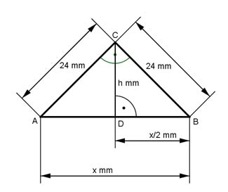

Pythagoras Aufgabe 8 Berechnen Sie h in mm.

Gleichschenkliges Dreieck, die Höhe h halbiert die Seite x. Satz von Pythagoras im Dreieck ABC: x2 = 242 + 242 = 1152 mm2 |√ x = = 33,9 mm Satz von Pythagoras im Dreieck DBC: x x 242 mm2 = (---)2 + h 2|-(---)2 2 2 x 33,9 mm --- = ---------- 2 2 33,9 h2 = 242 mm2 - (------)2 mm2 = 288,7 mm2 |√ 2 h = h = 17 mm